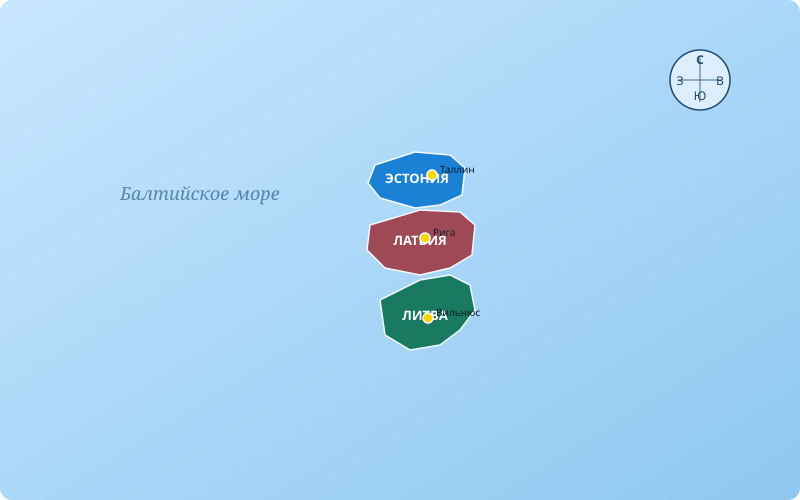
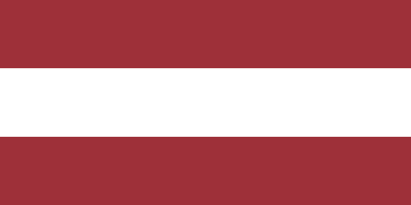
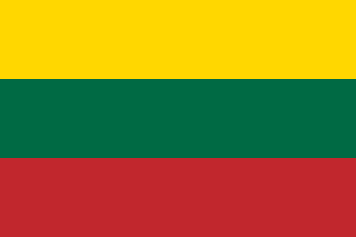

Галерея
Изображения, видео и аудио о красоте и культуре стран Балтии
Фотогалерея
Балтийские города, природа и культура





Видео о Балтии
Документальные материалы об истории и культуре
🌊 Волны Балтийского моря | Источник: Wikimedia Commons (Creative Commons CC BY-SA)
Документальный фильм о Балтии
🎬 Страны Балтии: история и природа | Источник: YouTube
Аудио
Народная музыка и гимны стран Балтии
🇱🇹 Гимн Литвы
«Тautinė giesmė» (Национальный гимн).
Источник: Wikimedia Commons (общественное достояние)
🇪🇪 Гимн Эстонии
«Mu isamaa, mu õnn ja rõõm» (Моя родина, моё счастье).
Источник: Wikimedia Commons (общественное достояние)
ℹ️ Об авторских правах: Все медиафайлы на этой странице взяты с Wikimedia Commons и распространяются по лицензиям Creative Commons или являются общественным достоянием (Public Domain). Ссылки на источники указаны под каждым медиафайлом.